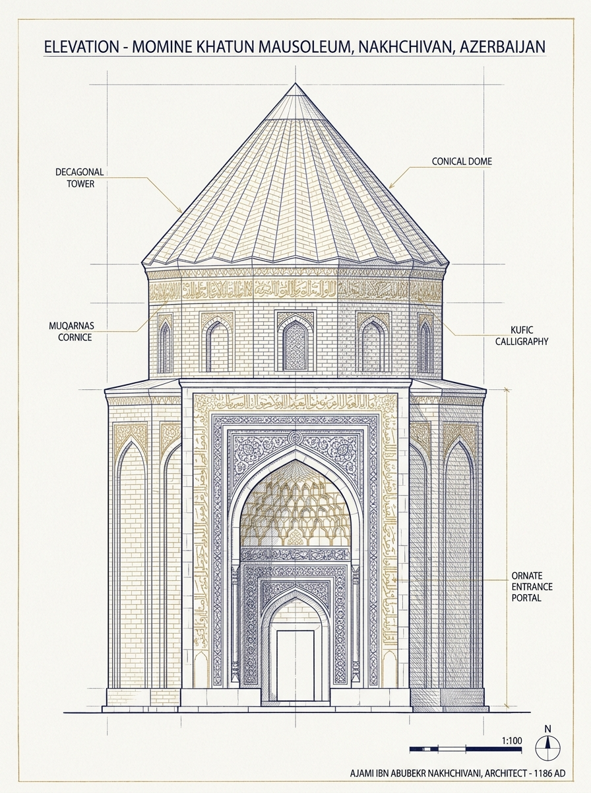
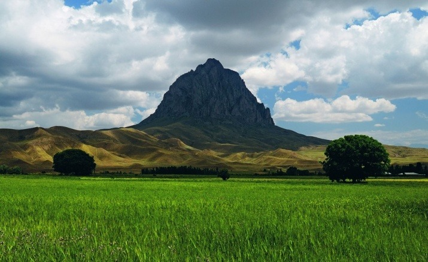
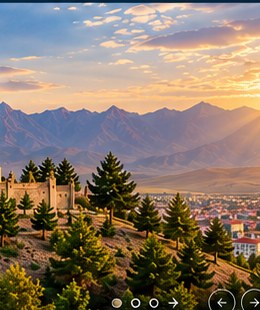

Naxçıvan Muxtar Respublikası Haqqında
Naxçıvan Muxtar Respublikası Azərbaycanın cənub-qərbində yerləşən, şimal və şərqdə Ermənistan (sərhəd xəttinin uzunluğu 246 km), cənub və qərbdə İran İslam Respublikası (204 km), şimal-qərbdə isə Türkiyə Cümhuriyyəti (11 km) ilə həmsərhəd olan strateji məkandır.
Azərbaycan Respublikasının Prezidenti cənab İlham Əliyevin 22 dekabr 2022-ci il tarixli Fərmanı ilə Naxçıvan Muxtar Respublikasında Azərbaycan Respublikası Prezidentinin Səlahiyyətli Nümayəndəliyi təsis olunmuş və idarəetmədə mütərəqqi islahatlar, iqtisadi canlanma və vətəndaş məmnuniyyəti dövrü başlamışdır.
Naxçıvan Rəqəmlərdə
Tarixi və Memarlıq Abidələri
Naxçıvan 5 min ildən artıq şəhərsalma mədəniyyətinə malik, qədim Naxçıvan memarlıq məktəbinin banisi Əcəmi Əbubəkr oğlu Naxçıvaninin şah əsərlərini yaşadan dünya əhəmiyyətli mədəniyyət beşiyidir.

1186-cı il · Əcəmi NaxçıvaniMöminə Xatun Türbəsi
Azərbaycan intibah memarlığının zirvəsi, 26 metr ucalığında möhtəşəm onbucaqlı türbə. Şərq incəsənətinin əvəzsiz incisi hesab edilir.
 VI–VII Əsrlər · Qəhrəmanlıq Rəmzi
VI–VII Əsrlər · Qəhrəmanlıq Rəmzi
Əlincə Qalası
Teymurləngin 14 il ərzində fəth edə bilmədiyi sıldırım qaya qalası. Azərbaycan xalqının yenilməzlik və cəsarət simvoludur.

2411 m · Təbiət Möcüzəsiİlandağ və Haçadağ
Nuh peyğəmbərin gəmisi ilə bağlı qədim əfsanələrə malik bənzərsiz təbii relyef formasiyası və Naxçıvanın əbədi vizit kartı.
 Tarixi-Memarlıq Kompleksi
Tarixi-Memarlıq Kompleksi
Nuh Peyğəmbər Türbəsi
Bəşəriyyətin ikinci babası həzrət Nuhun adı ilə bağlı dünya əhəmiyyətli zəvvar və tarixi-arxeoloji ziyarətgah.

Paytaxt İntibahıMüasir Şəhərsalma
Tarixi köklər ilə müasir Avropa standartlı abadlığı özündə vəhdət şəklində birləşdirən səliqəli, təhlükəsiz və təmiz şəhər mühiti.
 Dövlətçilik Əzəməti
Dövlətçilik Əzəməti
Bayraq Meydanı və Muzeyi
Naxçıvan şəhərinin ən hündür zirvəsində ucaldılmış üçrəngli dövlət bayrağımız və milli dövlətçilik tarixi muzeyi.
İnzibati Ərazi Vahidləri və Rayonlar
Muxtar Respublika 1 paytaxt şəhərdən və 7 inzibati rayondan ibarətdir. İstədiyiniz rayonu seçərək rəsmi demoqrafik və iqtisadi göstəriciləri ilə tanış ola bilərsiniz:
Naxçıvan Şəhəri (Paytaxt)
Naxçıvan Muxtar Respublikasının qədim paytaxtı, Şərqin ən möhtəşəm mədəniyyət, təhsil və elm ocaqlarından biridir. Möminə Xatun, Nuh Peyğəmbərin türbəsi, Cümə məscidi və Hüseyn Cavidin məqbərəsi bu şəhərdə ucalır.
Əsas İqtisadi İstiqamətlər
İnzibati idarəetmə, sənaye müəssisələri, ali təhsil və səhiyyə ocaqları, logistika mərkəzi
Coğrafi Mövqe və Zəngin Yeraltı Sərvətlər
Naxçıvan relyefi zəngin dağlıq silsilələrdən (Qapıcıq zirvəsi 3904 m), Arazboyu münbit düzənliklərdən və bənzərsiz balneoloji müalicəvi bulaqlardan təşkil olunmuşdur:
Müalicəvi Mineral Sular
Azərbaycanın mineral su ehtiyatlarının 60%-i Naxçıvandadır. Badamlı, Sirab, Vayxır və Darıdağ suları dünya standartlı brendlərdir.
Duzdağ Təbii Yatağı və Müalicəxanası
Milyon tonlarla saf qaya duzu ehtiyatı və bronxial astma, tənəffüs yolları xəstəliklərini sağaldan unikal yeraltı şaxta sanatoriyası.
Mərmər və Travertin Yataqları
Şahtaxtı və Qarabağlar travertinləri, zəngin əlvan metal, mis, molibden və qızıl yataqları sənaye potensialının əsasını təşkil edir.
Zəngəzur Dəhlizi və Geostrateji Qovşaq
Şərq-Qərb və Şimal-Cənub nəqliyyat arteriyalarını birləşdirərək Naxçıvanı Avrasiyanın mühüm beynəlxalq tranzit qovşağına çevirən strateji mövqe.
“Yaşıl Enerji Zonası” və İqtisadi İntibah
Ölkə Prezidenti İlham Əliyevin qarşıya qoyduğu strateji hədəfə əsasən Naxçıvan Muxtar Respublikası "Yaşıl Enerji Zonası" elan edilmişdir. Muxtar Respublikanın günəş və hidroenerji potensialı təkcə daxili tələbatı 100% təmin etməklə qalmır, qonşu Türkiyə və Avropa bazarlarına yaşıl elektrik enerjisi ixrac etməyə imkan verir.
500+ MVt Günəş və Külək Gücü Layihəsi
TotalEnergies, Nobel Energy və beynəlxalq investorların iştirakı ilə Naxçıvanda 500 MVt gücündə günəş fotoelektrik və külək stansiyalarının qurulması, həmçinin Naxçıvan-Türkiyə yüksək gərginlikli ixrac xəttinin çəkilişi sürətlə icra olunur.